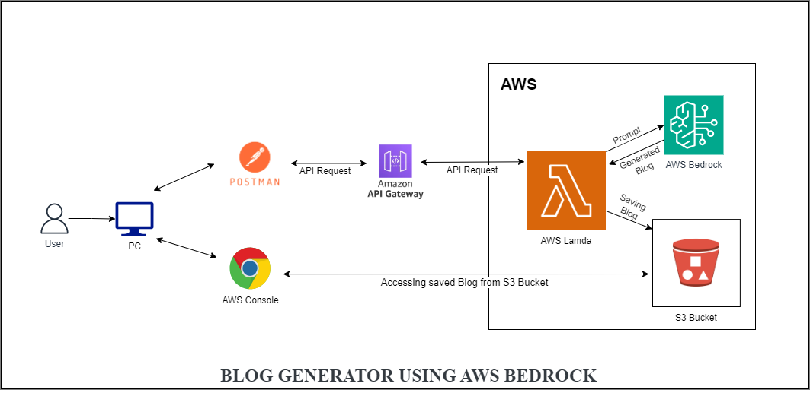

Prateek Garg
Innovative Generative AI Developer with deep expertise in leveraging diverse LLM models and platforms to drive advanced AI solutions. Proficient in both open-source ecosystems such as Groq, LangChain, Hugging Face, and Ollama, as well as leading commercial platforms including OpenAI, Amazon Bedrock, and Nvidia NIM. Adept at developing and optimizing generative models to address complex challenges, enhance performance, and deliver impactful AI-driven results.
Experience
Generative AI Developer and Hybrid Cloud Architect
As an AI Developer, I specialize in designing and implementing advanced generative AI solutions across diverse platforms. My role extends to collaborating with the pre-sales team to understand and analyze customer use cases for generative AI, delivering tailored solutions on hybrid cloud environments. I have successfully deployed end-to-end hybrid cloud infrastructure for multiple clients, ensuring seamless integration and performance. Additionally, I contribute to the pre-sales technical team by showcasing hybrid cloud capabilities and DevOps practices, demonstrating the value and versatility of our solutions.
DevOps Developer and Virtualization Architect
Experienced DevOps Developer with a strong focus on automating tasks through various pipelines and scripts. Successfully deployed end-to-end VMware infrastructure and Citrix VDI solutions for multiple clients, streamlining operations and enhancing system performance. Proven ability to implement and manage comprehensive DevOps strategies to optimize and automate workflows.
Education
Oriental Institute of Science and Technology
Bhopal, M.P., India.
Skills
Generative AI
Languages & Libraries

Models


Tools


Other Skills
Interests
Apart from being an AI developer, I enjoy most of my time learning other exciting stuffs either it be a Digital Magazine , Programming Languages or Developing New Projects. Although rest is very important in life but somehow doing exciting stuff relaxes me.
Apart from learning, I follow a number of sci-fi and fantasy genre movies and television shows.
I also love to travel and to cook.
Projects
-
Blog Generator Using AWS Bedrock:
Developed an automated blog generation system leveraging AWS Bedrock for managing the LLM model, AWS Lambda for code execution and integration, and API Gateway for external access, enabling seamless and scalable content creation.

-
Language Translator Using Gemma2-9B LLM Model:
Created a sophisticated language translation tool utilizing the Gemma2-9B LLM model, facilitating high-quality multilingual communication and translation. -
LangChain Chat with Search Integration:
Built an interactive chat application using LangChain, integrating search agents from Wikipedia, arXiv, and DuckDuckGo to enhance information retrieval and user interaction. -
LangChain URL Summarizer with Groq:
Designed and implemented a URL summarization tool using LangChain and Groq, providing efficient extraction and summarization of web content. -
NSE and BSE Stock Price Finder:
Developed a solution for real-time stock price tracking and analysis for NSE and BSE markets, delivering accurate and up-to-date financial information. -
Hybrid Cloud Portal End-to-End Deployment and Integration:
Led the deployment and integration of a hybrid cloud portal from start to finish, optimizing cloud resource management and operational efficiency. -
VMware Infrastructure End-to-End Deployment:
Managed the end-to-end deployment of VMware infrastructure for multiple clients, ensuring scalable and reliable virtual environments. -
Citrix VDI Infrastructure End-to-End Deployment:
Executed comprehensive deployment of Citrix VDI solutions, providing secure and efficient virtual desktop infrastructures for various clients.